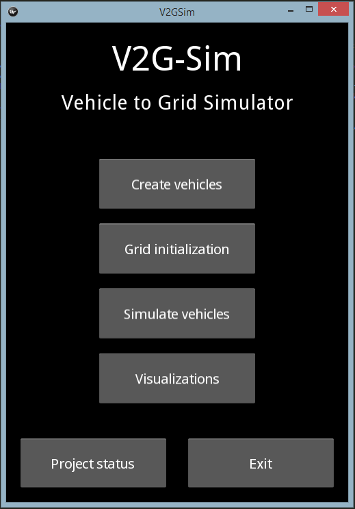
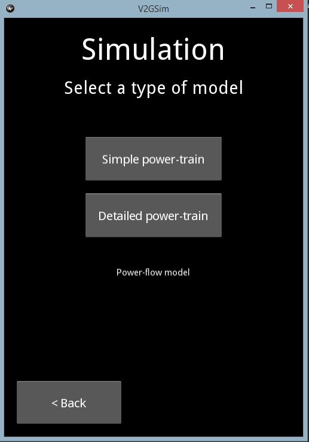
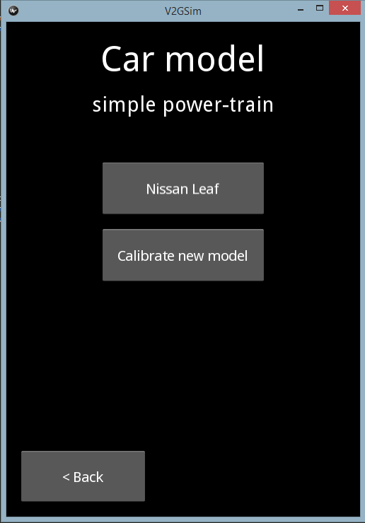
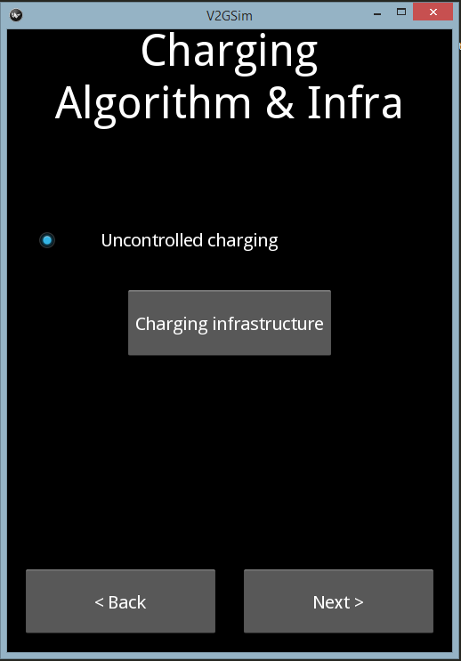

using V2G-Sim user interface¶
The graphical user interface (GUI) is a powerful tool for learning V2G-Sim and producing quick results. However, your creativity is limited by what we have built into the GUI. The graphical user interface should also be used along with the terminal, as it will give you interesting insights in the process of building a simulation. Moreover a user could also start using the GUI and decide to copy paste what was printed in the terminal to obtain a reproducible script of his work. After all, V2G-Sim is a set of functions that you can call in a script or by clicking in the GUI.
- The home page allows you to access other menus in order to:
- Load itineraries for vehicles (create vehicles)
- Load data to instantiate a grid (grid initialization)
- Simulate loaded vehicles (simulate vehicles)
- Visualize results (visualizations)
- Control the state of your project (project status)
Click on “Create vehicles” and then “import vehicles from Excel”. National Household Travel Survey (NHTS) data can be found for every American state inside “V2G-Sim/data”. Once vehicles are loaded, come back on the main menu and click on “Simulate vehicles”.
- Once you have clicked on simulate vehicles, you need to choose a power-train model to solve the consumption of vehicle while they are driving.
- If you are interested in the physic happening inside vehicles (battery degradation) you will choose a detailed power-train.
- If you intend to simulate large number of vehicles to quantify the grid impact you will choose a simple power-train model approach that reduces computing load.
The next step is to load a car model corresponding to the power-train model chosen.
If you chose the simple power-train model approach, you can either use a default Nissan Leaf model, or calibrate a new simple model from an Excel file relative to the detailed power-train model. By clicking on “Nissan Leaf” you will be using consumption parameters that have been found experimentally.
The next screen allows you to choose among different charging functions, but also to change the available power rate at different locations (with the button “charging infrastructure”)
Finally the last screen before launching the simulation will ask you for a number of iterations. A certain number of simulations is necessary in order to find a reasonable initial SOC value ( per default 0.9 at the first iteration). Once the simulation is finished, you will be able to click on visualization to see the results.